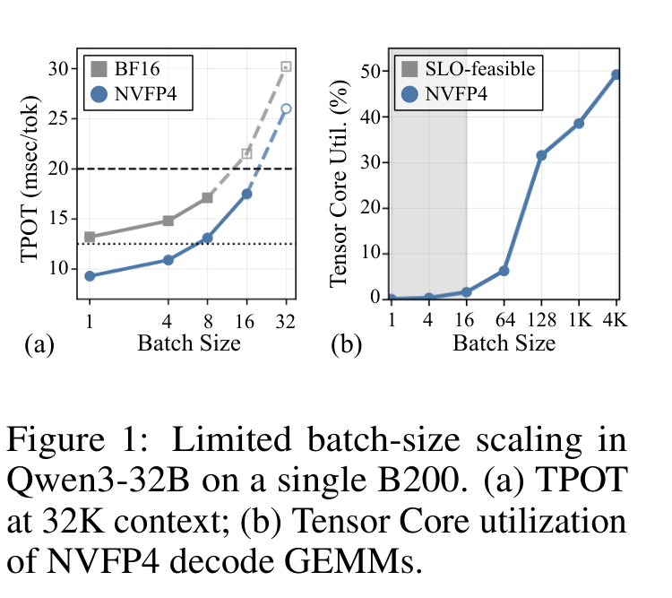
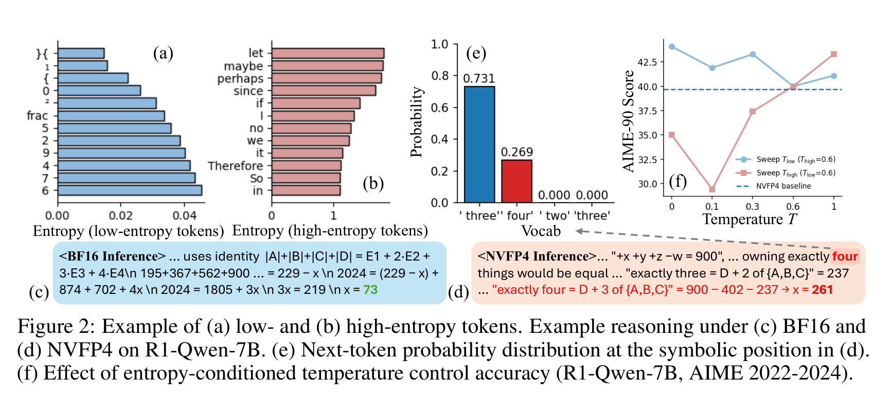
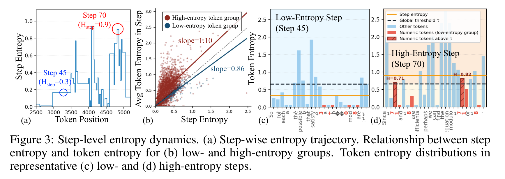
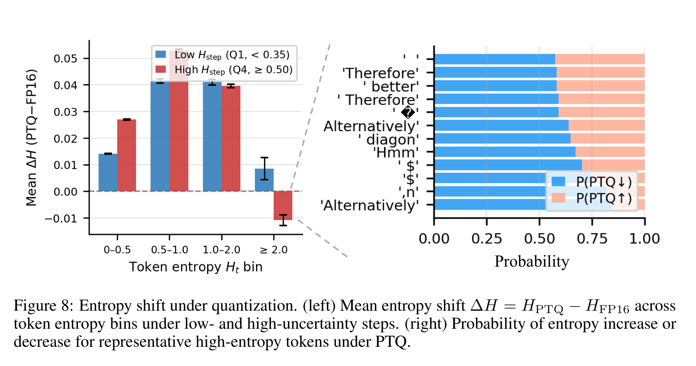
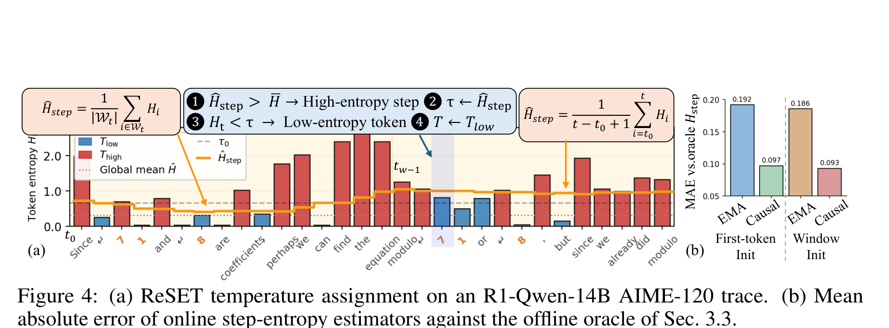
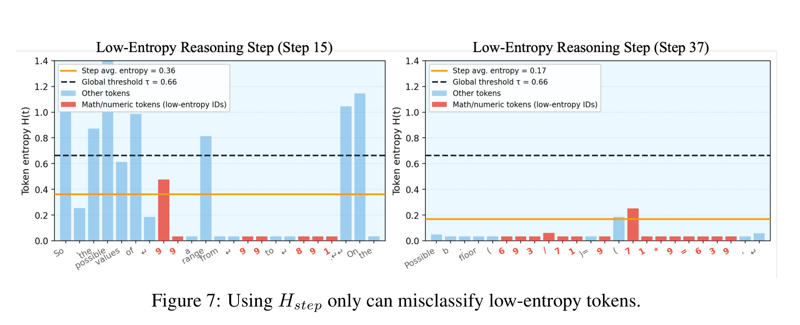
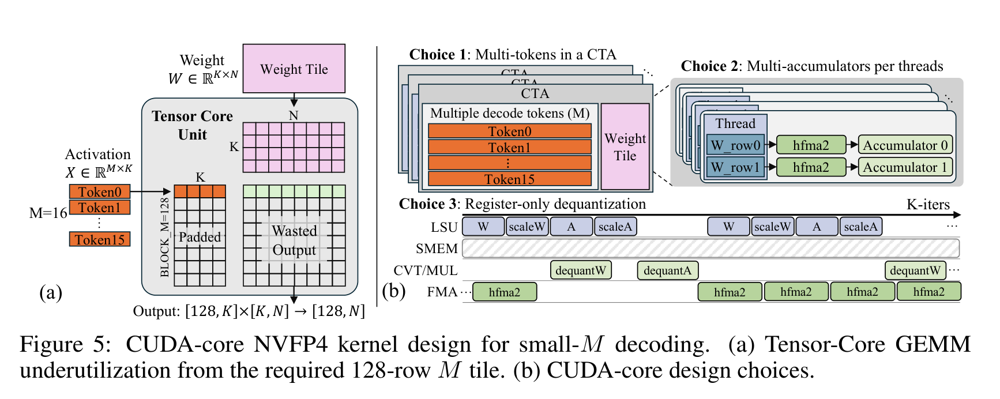
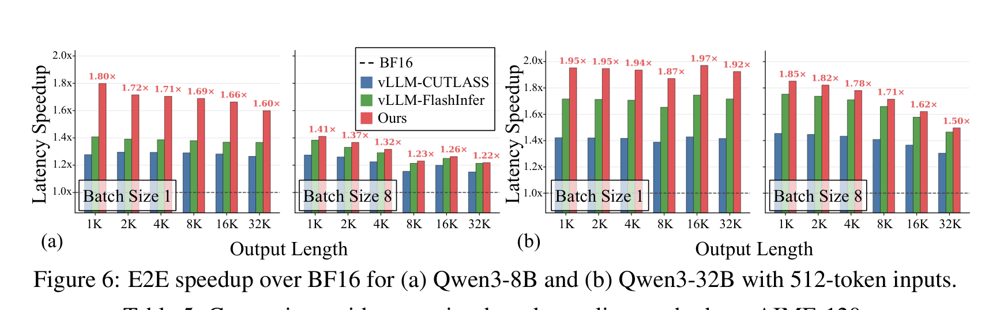

Large reasoning models (LRMs) buy accuracy with very long CoT — on average ~12K generated tokens per problem, up to 64K — which makes inference cost brutal. NVFP4, the 4-bit microscaled float format natively supported on NVIDIA Blackwell, advertises ~4× peak throughput over BF16 at ~¼ the weight size: the most tempting lever for low-latency serving. But using it directly runs into two walls:
ReSET (Reasoning Step Entropy-based Temperature scaling) answers wall 1 without touching a single weight: during decoding, it adapts the sampling temperature using step-level entropy, at a cost of ~1.5% per token. The companion CUDA-core kernel answers wall 2 for the M=1–8 decode regime — per the authors, the first public NVFP4 dequant + half-precision FMA implementation of its kind.
NVFP4 belongs to the microscaled-FP4 family: elements are 4-bit (E2M1) and dynamic range is recovered by shared scale factors. Compared to its sibling MXFP4, NVFP4 uses finer blocks (16 elements) with an FP8 (E4M3) block scale plus an FP32 global scale — magnitude calibration under low-precision W4A4 is steadier, which is why NVIDIA pushes it on B200:
| Format | Element type | Block scale | Global scale | Block size |
|---|---|---|---|---|
| MXFP4 | FP4 (E2M1) | FP8 (E8M0) | — | 32 |
| NVFP4 | FP4 (E2M1) | FP8 (E4M3) | FP32 | 16 |
Both use E2M1 elements; MXFP4 has larger blocks with a pure-exponent scale (more compact metadata), NVFP4 finer blocks + global scaling (finer precision control, slightly more scale overhead).
On quantization accuracy, the paper states an important counterintuitive fact: existing NVFP4 PTQ methods (rotations, channel scaling, dynamic block scales…) all compress weight quantization error — but at group size 16 the weight error is already small, and none of these methods correlates cleanly with inference accuracy. Rather than keep optimizing the error, look directly at the decoding process itself — that is exactly ReSET's starting point.
The cost axis of a reasoning model is per-token decode latency, not aggregate throughput: R1 generates ~12K tokens per AIME problem (up to 64K), so TPOT is what hits the SLO. Add KV-cache pressure, prefill/decode interference and generation stalls, and the SLO-feasible decode batch on a B200 is only M≤8. Meanwhile NVFP4's 4× peak requires Blackwell's tcgen05.mma instruction, whose tile is fixed at M=128 along the token dimension. Figure 1 documents both facts:

💡 Click any image to view the original 300-DPI version; click again or press Esc to close.
The authors analyze 1.5M tokens generated by R1-Qwen-14B on 90 AIME problems (2022–2024). Step one: classify tokens by entropy. Low-entropy tokens are the "locally forced" symbolic decisions — digits, operators; high-entropy tokens are semantically flexible branch points like "Alternatively". Figure 2 shows the two types, and how quantization actually breaks things:

Since the mistakes are occasional mis-samples at low-entropy symbolic tokens, the obvious move is to "cool" exactly those positions and sharpen the distribution. Split tokens by a fixed threshold $\tau_0$ (the 80th percentile of all token entropies, ≈0.6): the low-entropy group gets a low temperature $T_{\text{low}}$, the high-entropy group keeps $T_{\text{high}}$:
The result is the curve in Figure 2(f): lowering $T_{\text{low}}$ consistently helps but only partially restores accuracy, while changing $T_{\text{high}}$ barely moves it. The intervention target is right, but token-level entropy is the wrong control signal — a fixed threshold applied to individual token entropies misses cases it shouldn't.
Why does it miss? A granularity mismatch: existing entropy-aware decoding reasons about uncertainty at the token level, but the uncertainty that actually fluctuates during reasoning lives at the step level. A "reasoning step" is a coherent intermediate reasoning unit (implemented by splitting on double newlines), and step entropy is the mean of within-step token entropies. Figure 3 is the paper's central diagnostic:

One level deeper (Appendix B.2): quantization affects entropy in both directions. The entropy of low-entropy symbolic tokens is systematically inflated (more in high-uncertainty steps) — the direct cause of increased sampling errors. Meanwhile very-high-entropy tokens ($H_t \geq 2.0$) see their entropy collapse in high-uncertainty steps — discourse connectors like "Alternatively" lose branch diversity as probability mass concentrates onto fewer continuations. Together these two effects fully motivate the temperature policy: $T_{\text{low}}$ suppresses the "fake uncertainty", $T_{\text{high}}$ gives back the "compressed diversity":

ReSET = Reasoning Step Entropy-based Temperature scaling, with two components: the step-aware threshold (SAT, §4.1) and an online step-entropy estimator (HSE, §4.2). Figure 4 walks through the full decision chain:

The fixed threshold fails in exactly one situation: high-uncertainty steps. So the threshold becomes a choice between the global running mean $\bar{H}$ and the online step-entropy estimate $\hat{H}_{\text{step}}(t)$:
Confident steps:fall back to the global threshold $\tau_0$ — structured low-entropy symbols keep being identified by the global standard. Uncertain steps:$\tau_t$ becomes the step's own entropy estimate, making the rule step-relative: any token cooler than "this step's typical token" gets cooled, regardless of where the global line sits. No new hyperparameter is introduced — $\tau_t$ is fully determined by quantities already being tracked.
Why not go step-relative everywhere? In confident steps $\hat{H}_{\text{step}}$ degenerates to a tiny value, and a relative threshold would misfire on normal symbolic tokens — Figure 7 in the appendix shows why the fallback branch is indispensable:

SAT needs $\hat{H}_{\text{step}}(t)$ at every decoding position, but Section 3's offline definition averages over tokens not yet generated — it violates autoregressive causality. The difficulty is two opposing bias-variance trade-offs inside a step: in the step's middle and late positions, the within-step running average has the lowest bias (and Figure 4b shows it consistently beating an EMA — "step boundaries" carry more information than "temporal recency"); over the first $w$ positions, samples are too few and often step-opening discourse tokens, so a sliding window of the last $w$ tokens initializes the estimate, trading a little cross-step bias for variance:
Figure 4b compares the estimators: window initialization (Init) cuts variance early in the step, the causal within-step average (Causal) has the lowest bias late, and plain EMA wins neither.
$T_{\text{base}}=0.6$ (model-recommended), with $T_{\text{low}} < 0.6 < T_{\text{high}}=1.0$. The necessity of a raised $T_{\text{high}}$ comes from the entropy collapse of §3: quantization compresses the diversity of high-entropy tokens in uncertain steps, and a hotter temperature gives it back; empirically $T_{\text{high}}=1.0$ is consistently best. $T_{\text{low}}$ is chosen per (model, task) on a held-out calibration set; $\tau_0$ is the 80th percentile of calibration-set token entropy — and it calibrates with just 5 NuminaMath problems:
| Model | R1-Qwen-7B | R1-Qwen-14B | Qwen3-8B | Qwen3-14B | Qwen3-32B |
|---|---|---|---|---|---|
| $\tau_0$ | 0.6446 | 0.6488 | 0.5505 | 0.4863 | 0.5363 |
$\tau_0 \approx 0.49$–$0.65$ across models; no task-level data is needed to calibrate it.
Per-token compute: one entropy reduction + two scalar updates ($\hat{H}_{\text{step}}$, $\bar{H}$) + one branch — negligible against a full decode step; the measured end-to-end cost lands in Section 6.
Section 2 already showed the <1% utilization; the mechanism: every NVFP4 GEMM path on Blackwell (vLLM / CUTLASS / MR-GPTQ) goes through tcgen05.mma with the token-dimension tile fixed at M=128. The logical activation $X \in \mathbb{R}^{M \times K}$ must be padded to 128×K regardless of M, and only M output rows are useful — at M=8, 6.25% of tile rows do work. Throughput-oriented frameworks amortize the padding over huge batches; inside the SLO-feasible region the advantage evaporates. CUDA cores can expose M flexibly at the thread level with no fixed tile — but no existing framework ships a CUDA-core NVFP4 path. That gap is what this paper fills, against three obstacles: (C1) reuse the streamed weight tile — all tokens share the same W, and processing tokens one-by-one re-streams the same weights from HBM; (C2) enough parallel threads with independent accumulator chains — a naive mapping serializes half2 FMAs along K into one dependency chain and idles the CUDA cores at small M; (C3) FP4 unpacking + shared-scale dequantization must neither land in an intermediate buffer nor insert synchronizations inside the inner K loop.

The three choices answer C1–C3 one by one. Multi-token CTA fusion (C1):multiple active decode tokens share one thread block; the weight tile is read from HBM once and reused by several tokens' dot products — without inflating M to 128; especially useful for small-but-not-1 batches (M=4/8). Multi-accumulator threads (C2):each thread owns two weight rows and two independent accumulator chains, and the scheduler interleaves the two hfma2 streams to hide conversion/scale/FMA latency — the trade-off is ILP vs. register pressure. Register-only dequant (C3):unpacked FP16 pairs, scales and partial accumulations stay in registers straight into hfma2; software pipelining overlaps load/convert/scale/accumulate across K tiles — no shared-memory writes, no synchronization, sidestepping the "fixed overhead can't be amortized" trap of small M.
Runtime scheduling: M=1–2 always takes the CUDA-core kernel; M≥128 takes the authors' Tensor-Core GEMM; intermediate shapes pick per measured (M, shape) latency. Since vLLM captures CUDA graphs per batch size, the choice freezes at capture time and replays with zero branching overhead.
At M=1, all twelve projection shapes across three Qwen3 models beat vLLM-CUTLASS by 1.57–2.49×, with the largest gain on Qwen3-8B's down-projection (N=4096, K=12288); layers with larger K (Gate-Up / Down) gain more since they suffer most from padding waste + weight streaming:
| Projection | N | K | vLLM | Ours | Speedup |
|---|---|---|---|---|---|
| QKV | 10240 | 5120 | 13.41 | 6.62 | 2.03× |
| Out | 5120 | 8192 | 12.40 | 7.73 | 1.60× |
| Gate/Up | 25600 | 5120 | 25.89 | 13.25 | 1.96× |
| Down | 5120 | 25600 | 33.26 | 15.00 | 2.22× |
At M=4/8 the CUDA-core kernel still leads across all 24 combinations (1.19–1.66×); at M=128 the authors' Tensor-Core GEMM holds 1.00–1.34× over vLLM-CUTLASS.
Five reasoning models — R1-Distill-Qwen-7B/14B, Qwen3-8B/14B/32B — quantized from public BF16 weights to true NVFP4 W4A4 with NVIDIA ModelOpt (E2M1 elements, E4M3 block scales, group size 16), KV cache kept BF16; all baselines share the same weight format and pipeline on the same hardware. Benchmarks: AIME-120 (2022–2025 merged), GPQA-Diamond, LiveCodeBench; averaged over 8 seeds; top-p=0.95, max 32K tokens. Baselines: RTN, BRQ (block rotation), 4/6 (Four-Over-Six adaptive block scaling), MR-GPTQ, all decoded at their default T=0.6; ReSET is applied on top of RTN.
Across three benchmarks × five methods × five models, ReSET ranks first on every benchmark average and is the only method that beats the RTN baseline on every task. The AIME-120 block (the full table is in the Chinese deep-read):
| Method | R1-Qwen-7B | R1-Qwen-14B | Qwen3-8B | Qwen3-14B | Qwen3-32B | Avg |
|---|---|---|---|---|---|---|
| BF16 Baseline | 45.7 | 57.4 | 70.4 | 76.1 | 75.8 | 65.1 |
| RTN (NVFP4) | 39.6 | 52.4 | 62.5 | 70.4 | 74.4 | 59.9 |
| BRQ | 41.4 | 49.8 | 53.8 | 66.9 | 73.0 | 57.0 |
| 4/6 | 41.1 | 53.1 | 64.0 | 70.1 | 74.8 | 60.6 |
| MR-GPTQ | 39.6 | 50.6 | 65.2 | 71.0 | 73.3 | 60.0 |
| ReSET | 43.8 | 54.0 | 64.9 | 72.1 | 77.5 | 62.5 |
Details worth noting: ① advanced PTQ (BRQ, 4/6, MR-GPTQ) does not consistently beat plain RTN at scale — supporting the claim that further compressing weight error buys little under NVFP4; ② ReSET's largest gains are on AIME-120: +2.6 average (Qwen3-32B +3.1, R1-Qwen-7B +4.2), and Qwen3-32B's 77.5 exceeds the BF16 baseline (75.8) — the temperature policy doesn't just compensate quantization loss, it improves sampling itself; ③ GPQA / LiveCodeBench gains are milder (avg +1.3 / +1.0) but still best-in-class.
Against alternative threshold mechanisms (fixed threshold, sliding window) under identical decoding settings, ReSET wins on every model (62.5 vs. 60.9 / 60.8 on AIME-120) — validating "step-relative entropy" as the effective signal. Sweeping truncation parameters doesn't substitute either: at T=0.6, top-p sweeps move the average only from 59.9 to at most 60.3, and min-p variants land below baseline (58.2–59.4). And against "cool everything in low-uncertainty steps": uniformly applying $T_{\text{low}}$ to all tokens of such steps scores 60.6 vs. ReSET's 62.5 — selective cooling matters because not every token in a confident step is strictly determined.
Putting the kernel gains into a full serving stack (B200, 512-token input, outputs up to 32K, against BF16, vLLM-CUTLASS, vLLM-FlashInfer):

The sensitivity story in one line: nothing is sensitive. Window size w from 16 to 128 moves the average by ~1.1 points (w=32 best; larger windows blur step-local statistics); $T_{\text{low}}$ within 0.1–0.4 moves it by 0.4 points; $T_{\text{high}}$ shows a consistent "higher is better, saturating at 1.0" trend — echoing the entropy-collapse analysis: whatever diversity quantization compressed away, a raised $T_{\text{high}}$ returns. Around the defaults (w=32, $T_{\text{low}}$=0.1, $T_{\text{high}}$=1.0) the landscape is flat — deployment needs no careful tuning.
Self-stated limitations (Appendix D): entropy dynamics may depend on the training recipe (RL/SFT/distillation); symbolic sampling error is not the only failure mode (long-range coherence, discourse planning, intermediate semantic representations may also be affected by quantization); only Blackwell + NVFP4 + small-batch latency is validated — large-batch throughput, other hardware, and the more aggressive MXFP4 format (larger quantization error, different entropy dynamics) remain unexplored.
Hover any dotted-underlined abbreviation in the text, or come back here any time.
| Abbr. | Full name | One-line explanation |
|---|---|---|
| LRM | Large Reasoning Model | Models that solve problems via long chains of thought, e.g. DeepSeek-R1, Qwen3 |
| CoT | Chain-of-Thought | Writing out step-by-step reasoning before the answer |
| NVFP4 | NVIDIA FP4 (microscaled) | Blackwell-native 4-bit format: FP4 elements + shared within-group scales (+ FP32 global scale) |
| W4A4 | Weight 4-bit / Activation 4-bit | Inference mode with both weights and activations quantized to 4 bits |
| PTQ | Post-Training Quantization | Quantizing weights/activations without retraining |
| RTN | Round-To-Nearest | The simplest "round to nearest" quantization baseline |
| BRQ / 4-6 / MR-GPTQ | — | Three advanced PTQ baselines: block rotation / adaptive block scaling / reconstruction-based |
| SLO | Service Level Objective | A quality-of-service target, e.g. "per-token latency ≤ some bound" |
| TPOT | Time Per Output Token | Latency to produce one output token — the latency-critical metric |
| KV cache | Key-Value cache | Cached key/value pairs of history; avoids recomputation but eats HBM |
| Tile / M | Tensor-Core tile | The minimal matrix-multiply block on Tensor Cores; here fixed at M=128 along tokens |
| GEMV / GEMM | Matrix-Vector / Matrix-Matrix | Vector×matrix (decoding) vs. matrix×matrix (prefill / large batch) |
| CTA | Cooperative Thread Array | A cooperative thread array, i.e. one thread block |
| ILP | Instruction-Level Parallelism | Executing multiple independent instructions concurrently |
| SAT / HSE | Step-Aware Threshold / (online) Step-Entropy Estimator | ReSET's two components: the step-relative threshold rule and the causal step-entropy estimator |
| Perplexity | — | The language model's "surprise" at text; lower is better |